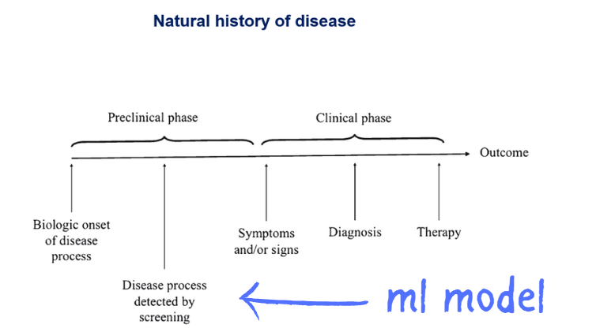
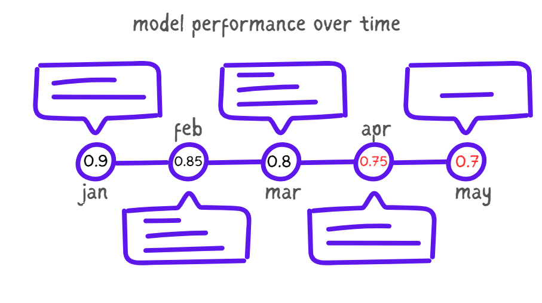
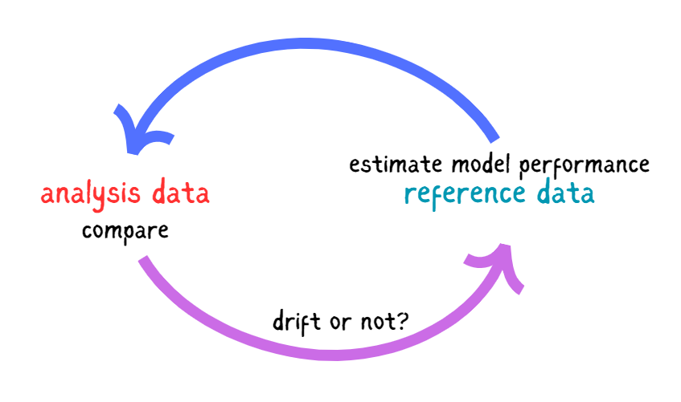
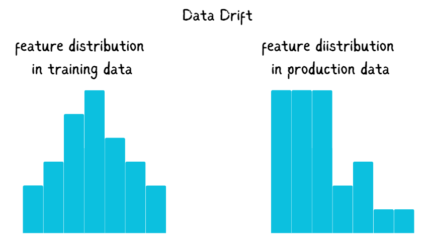
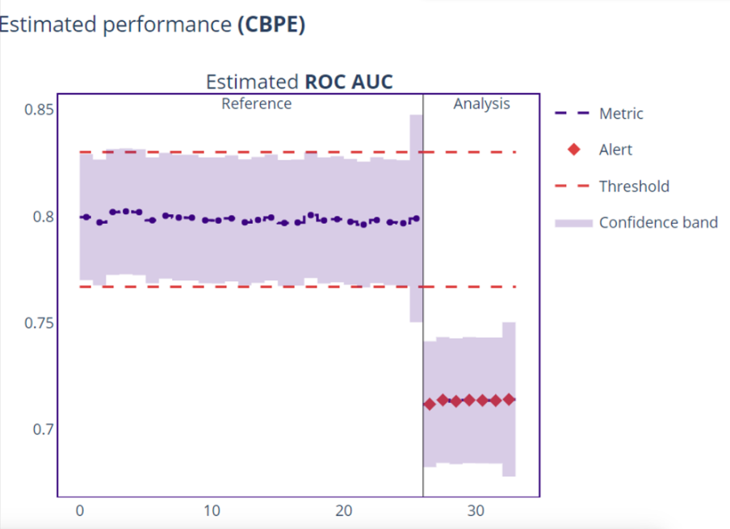
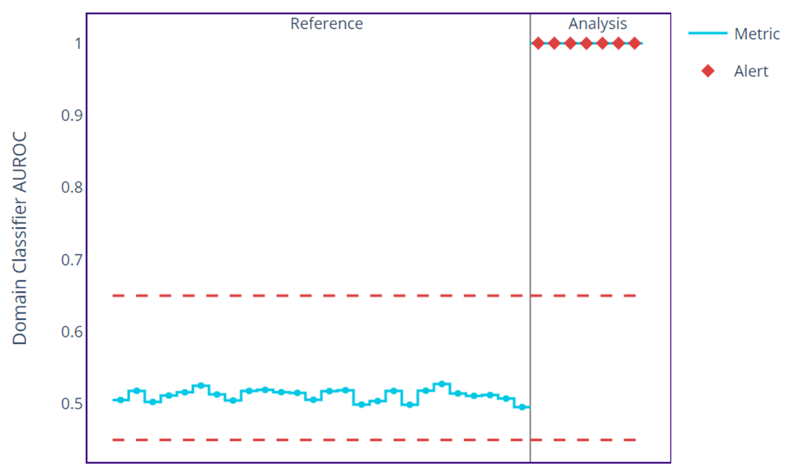
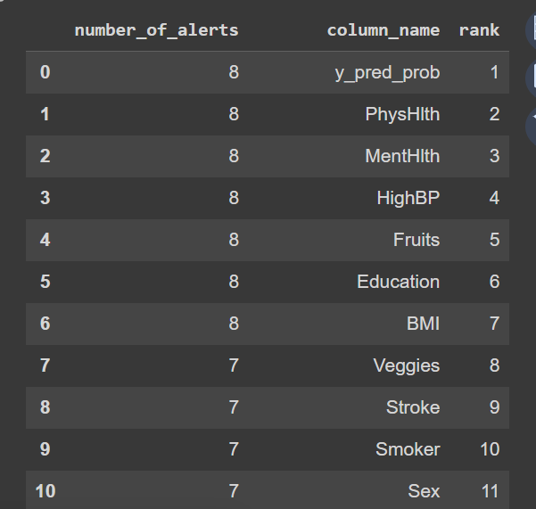
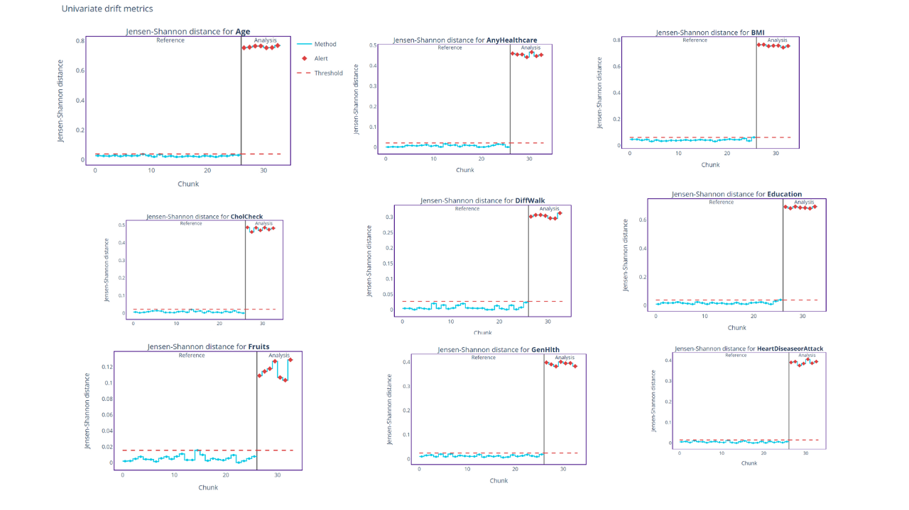
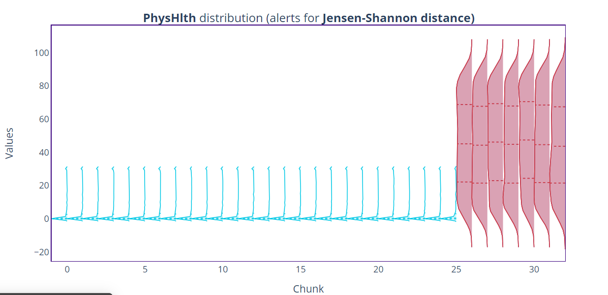

Introduction
According to WHO, the number of people with diabetes rose from 108 million in 1980 to 422 million in 2014. Diabetes is a serious disease that leads to blindness, kidney failure, heart attacks, strokes, and lower limb amputations. It is mostly prevalent in low- and middle-income countries.
Building a healthcare system that uses machine learning to predict patients with diabetes will help in early detection making it easy for healthcare providers to screen patients with diabetes at an early stage, before diagnosis.

Machine learning models tend to degrade with time, highlighting the need for effective and constant monitoring of the model to know when its performance is declining. Often, this arises as a result of the change in the distribution of the data compared to the data the model was trained upon, this phenomenon is known as Data Drift.
In this article, you will learn how to monitor a diabetes classifier and detect data drifts in the data received from patients in a health information management system or mobile application using NannyML.
NannyML is an open-source library for monitoring machine learning model performance in production, even without the predicted values being ready. It allows you to track your machine-learning model over time and see checkpoints where the model degrades.

Estimating Model Performance with NannyML
NannyMl offers binary class classification that one could use to estimate the model’s performance, even without targets. Model estimation performance with NannyML involves:
- Getting the reference and analysis sets ready: The reference set is the data where the model behaves as expected, usually the test data. The analysis set is the latest production data, either with target features or not.
- Training a performance estimator on the reference set: NannyML uses the reference set to train a performance estimator, it’s advisable to use the test data as reference data to prevent overfitting.
- Using the estimator to predict performance on the analysis set (simulating real-world data): NannyML estimates the model performance on the analysis data using the trained performance estimator. One can use various classification metrics, such as accuracy or F1-score. Since misclassifying a patient (false negative) is more severe than misclassifying a healthy patient as diabetic (false positive), the AUC-ROC is the most appropriate metric to use in this case.

Detecting Data Drift with NannyML
Let’s say you deployed a machine-learning model. As time goes on, the model tends to degrade, This is due to the nature of the data changing. If you have an application that you initially designed for kids and you train most of your machine learning models using your current user’s data, then all of a sudden middle-aged people and the elderly start using your application, and they become more of your users than the kids you designed it for. This will change the age distribution of your data, If age is one important feature in your machine learning model, your model will get worse with time. This is where you need to monitor when such changes happen in your data so that you can update the ML model.

NannyML uses various algorithms to detect data drift, either using Univariate drift detection or Multivariate drift detection methods.
- Univariate drift detection: In this approach, NannyML looks at each feature used in classifying if a patient is diabetic, and compares the chunks with those created from the analysis period. The result of the comparison is called a drift metric, and it is the amount of drift between the reference and analysis chunks, which is calculated for each chunk.
- Multivariate Drift Detection Instead of taking every feature one by one, NannyML provides a single summary metric explaining the drift between the reference and the analysis sets. Although this approach can detect slight changes in the data, it is difficult to explain compared to univariate drift.
In the case of classifying diabetic patients, undetected drift is dangerous and can lead to wrong model classifications. This is worse if the number of false negatives is high, the classifier might not detect some patients with diabetes, this can lead to late diagnosis.
Estimating Model Performance in the Diabetes Classifier
NannyML uses two main approaches to estimate model performance, Confidence-based Performance estimation (CBPE) and Direct Loss estimation (DLE). In this case, we are interested in using the CBPE, since we are dealing with a classification task.
The CBPE uses the confidence score of the predictions to estimate the model performance, the confidence score is a value that the diabetes classifier gives for each predicted observation, expressing its confidence in predicting if a patient is diabetic., with values ranging from 0 to 1 and the closer it is to 1, the more confident the classifier is with it’s prediction.
The diabetes data contains 253,680 responses and 21 features. In this section, you will learn how to use this data to build an ML model, estimate your model’s performance, and detect data drift on updated data.
Project Requirements
To get started, ensure you have installed NannyML on your JupyterNotebook. Download the analysis and diabetes data. The diabetes data is the data you will train the machine learning model on, and the analysis data is what you would take as the production data from the patients, which you will use to estimate model performance and detect data drift later on.
Building the ML Model
Let’s build a simple random forest classifier to classify respondents as diabetic.
import pandas as pd
from sklearn.model_selection import train_test_split
from sklearn.ensemble import RandomForestClassifier
from sklearn.metrics import accuracy_score, classification_report
# Load your data
diabetes = pd.read_csv("binary_diabetes.csv")
# Split the data into features (X) and target (y)
X = diabetes.drop('Diabetes_binary', axis=1)
y = diabetes['Diabetes_binary']
# Split the data into train and test sets
X_train, X_test, y_train, y_test = train_test_split(X, y, test_size=0.3, random_state=42)
# Create and train the model
model = RandomForestClassifier()
model.fit(X_train, y_train)
# Make predictions on the test set
y_pred = model.predict(X_test)
# Get the predicted probabilities
y_pred_proba = model.predict_proba(X_test)[:, 1]
# Print the classification report
print(classification_report(y_test, y_pred))
# Create a dataframe with the test data, predicted classes, and predicted probabilities
test_results = X_test.copy()
test_results['y_true'] = y_test
test_results['y_pred'] = y_pred
test_results['y_pred_prob'] = y_pred_probaHere is the output of the classification model.
precision recall f1-score support
0.0 0.88 0.97 0.92 65605
1.0 0.48 0.18 0.26 10499
accuracy 0.86 76104
macro avg 0.68 0.57 0.59 76104
weighted avg 0.83 0.86 0.83 76104From the report above, the classifier can classify those with diabetes with a precision of 0.88 accurately. This means the chances of the classifier missing a diabetic patient are low. An overall accuracy of 0.86 indicates the model is performing well.
Estimating Model Performance
Using CBPE, you can estimate the model performance when in production, and the analysis data does not necessarily have to contain the target feature.
import nannyml as nml
reference_df = test_results
analysis_df = pd.read_csv("/content/analysis_df.csv")
estimator = nml.CBPE(
y_pred_proba ="y_pred_prob",
y_pred = "y_pred",
y_true = "y_true",
problem_type = "classification_binary",
metrics = ["roc_auc"],
chunk_size = 3000
)
estimator.fit(reference_df)
results = estimator.estimate(analysis_df)
metric_fig = results.plot()
metric_fig.show()nml.CBPEcalculates the CBPE and takes the argument,y_pred_probathe predicted probability,y_predthe predicted classification,y_truethe actual classification.- The
problem_typeargument takes the type of classification one is interested in, binary classification in this case. - Results in NannyML are presented per chunk, by aggregating the data to a single data point on the monitoring results; here I used a chunk of 3000.
You can use any other metric, but the roc-auc metric is preferred in this situation because this is a health problem and it tells us more about the ability of the classifier to detect true positives, to minimize the chance of missing any diabetic patient.

The plot above shows that the model ROC-AUC metric started to fail at some point, which led to inaccurate predictions. The blue marker indicates the model metric, if this line exceeds the upper or lower threshold in red, it raises an alert signifying a drift.
The next step is to see what causes the poor model performance in these chunks by applying various drift detection methods.
Detecting Data Drift
Let’s use a multivariate drift detection method to get a summary number that detects any changes in our data using the domain classifier approach. This provides a measure of discriminating the reference data from the examined chunk data. If there is no data drift, the datasets are not different giving a value of 0.5. The higher the drift, the higher the returned measure, with a value as high as 1. This method provides a general overview of data drift in the analysis data.
non_feature_columns = ['y_pred_proba', 'y_pred', 'y_true']
feature_column_names = [
col for col in reference_df.columns
if col not in non_feature_columns
]
cat_features = [feature for feature in feature_column_names if feature not in ['BMI', 'MentHlth', 'PhysHlth', 'Age']]
calc = nml.DomainClassifierCalculator(
feature_column_names=feature_column_names,
chunk_size=3000
)
calc.fit(reference_df)
results = calc.calculate(analysis_df)
figure = results.plot()
figure.show()
The plot above shows the domain classifier values in the reference data are either a little below or above 0.5, but that of the analysis data reaches a value of 1, indicating the presence of data drift in the analysis data. Now that we know we have data drift in the analysis data, let’s see which features are causing this drift.
Ranking
We need to know the features contributing to drift in the analysis data. The ranking method uses the results of univariate drift detection to rank features based on alert counts or correlation ranking.
Let’s use the alert count’s approach to know which features are causing the drift in data.
univ_calc = nml.UnivariateDriftCalculator(
column_names=feature_column_names,
treat_as_categorical=['y_pred', *cat_features],
continuous_methods=['kolmogorov_smirnov', 'jensen_shannon'],
categorical_methods=['chi2', 'jensen_shannon'],
chunk_size=3000
)
univ_calc.fit(reference_df)
univariate_results = univ_calc.calculate(analysis_df)
alert_count_ranker = nml.AertCountRanker()
alert_count_ranked_features = alert_count_ranker.rank(
univariate_results.filter(methods=['jensen_shannon']),
only_drifting = False)
display(alert_count_ranked_features)kolmogorov_smirnov, jensen_shannonand chi2 are various univariate drift detection methods you can always choose from.

The table above shows the top 10 features likely to cause drifts based on the alert counts. Next, let’s investigate further the contribution to data drift for each variable using the univariate drift detection method.
Univariate Drift Detection Method
Univariate drift detection allows you to see the amount of drift in the suspected features, which was used earlier to rank the features.
univ_calc = nml.UnivariateDriftCalculator(
column_names=feature_column_names,
treat_as_categorical=['y_pred', *cat_features],
continuous_methods=['jensen_shannon'],
categorical_methods=['jensen_shannon'],
chunk_size=3000
)
univ_calc.fit(reference_df)
univariate_results = univ_calc.calculate(analysis_df)
figure = univariate_results.filter(column_names=univariate_results.continuous_column_names, methods=['jensen_shannon']).plot(kind='drift')
figure.show()
The plots above show the amount of drift in some of the features using Jensen-Shannon distance, which you can apply to both continuous and categorical features. You can also see that the red dotted points exceed the dotted line in each plot, this signifies drift in the variable.
You can also go further into each feature to see the distribution, this lets you know how large this drift is Let’s take a critical look at PhyHlth, this is the first feature on the ranked list.
figure = univariate_results.filter(column_names=["PhysHlth"], methods=['jensen_shannon']).plot(kind='distribution')
figure.show() 
From the plot, you can see in highlight chunks with data drift, the plot is wider and bigger compared to that of the reference data, the plot also tells the presence of negative values in the analysis data. You can follow this procedure for each feature in the model indicating data drift using the univariate drift detection method. From the above results, you can understand the change in model prediction and the cause of those changes.
Conclusion
In this article, you learned about NannyML an open-source tool for monitoring model performance and detecting data drifts. You also learned how to use NannyML on a diabetes classifier and how to apply both univariate and multivariate drift detection methods in detecting data drift using NannyML.
What’s next after detecting data drift? Check out this article, to know what to do when you detect drifts in your data.
Recommended Reads
- Monitoring a Hotel Booking Cancellation Model Part 1: Creating Reference and Analysis Set
- Tutorial: Monitoring an ML Model with NannyML and Google Colab
- How to Estimate Performance and Detect Drifting Images for a Computer Vision Model?
Need Help with Data? Let’s Make It Simple.
At LearnData.xyz, we’re here to help you solve tough data challenges and make sense of your numbers. Whether you need custom data science solutions or hands-on training to upskill your team, we’ve got your back.
📧 Shoot us an email at admin@learndata.xyz—let’s chat about how we can help you make smarter decisions with your data.